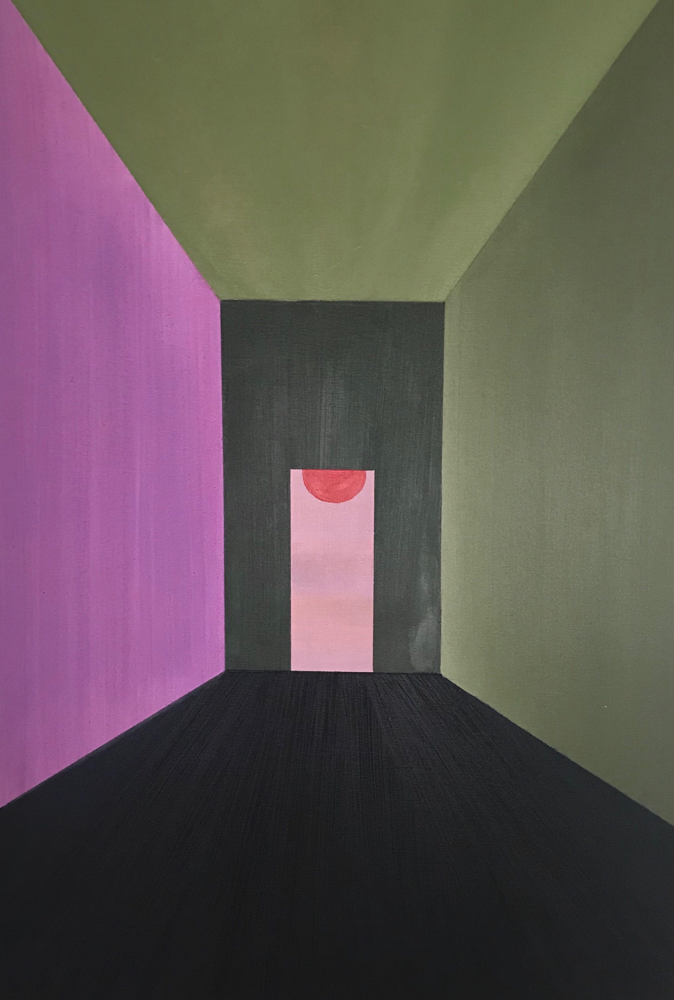

Artist Statement: Throughout my work, I navigate the ideas of space, how we perceive and move aroundspace. Using photos from my travels, I apply different methods of glitching to demonstrate theatmosphere of my relationship to the environment. My subjects involve the natural world andarchitectural structures. My vision derives from my self reflective studies through writing poems,sitting meditation and Buddhist studies. There is a dialogue between the inner and outer spacewithin my work. The inner space narrates my awareness and perception. The outer space is thephysical environment. My self reflective studies derive from ancient technology, prayer andsitting meditation, and also studying the Avatamsaka Sutra in my adolescent years at theBerkeley Buddhist Monastery. In my glitch series, I’ve created an individual style to each of myphotos. I use certain methods to evoke a sense of movement, emotions, and a play on visualperception. I want to be able to show our relationship to the space around us. My obsession withbreaking down the physical perception of our infrastructure and the idea of what is going on aswe are interacting with the space around us is constantly trying to find its voice in my work.
